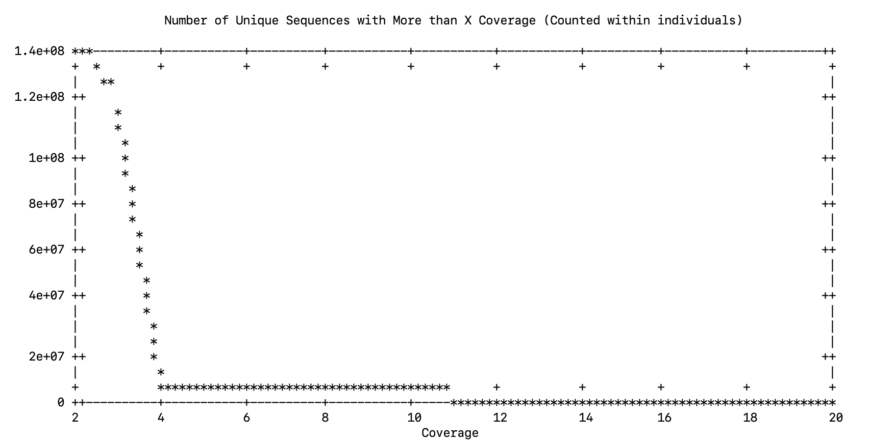
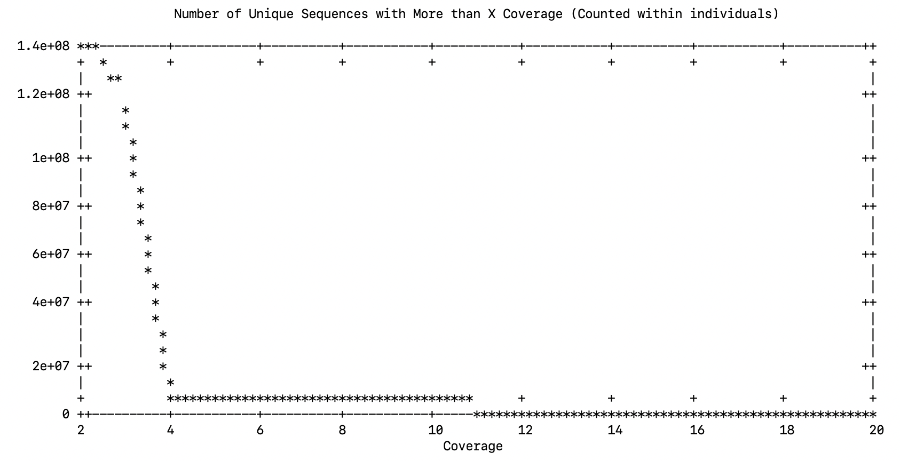

Start a new screen session
[rjdyer@huff]$ screenSo this time I made a small representation of the overall sequences, using 10% of each individuals reads.
#!/bin/bash
for FILE in $(ls *.fq.gz);
do
seqtk sample $FILE 0.10 >> POPULATION_01.fq
echo $FILE
done Run this, it takes about 14 hours.
Then I’ll fire up the srun
[rjdyer@huff]$ srun --nodes=1 --mem=128G --export=ALL -J assembly --pty /bin/bashAfter which I’m assigned to processor 13 and I’ll move the file to its own directory
[rjdyer@huff13]$ scp PopA_010.fq ../small/And zip it for [[dDocent]]
[rjdyer@huff13]$ gzip PopA_010.fqTook it down from 192G -> 32G
[rjdyer@huff small]$ ls -alh
total 217G
drwxrwxr-x. 2 rjdyer rjdyer 4.0K Jan 25 08:54 .
drwxr-x---. 7 rjdyer rjdyer 4.0K Jan 25 08:51 ..
-rw-r-----. 1 rjdyer rjdyer 192G Jan 24 17:53 PopA_010.fq
-rw-r-----. 1 rjdyer rjdyer 32G Jan 24 17:53 PopA_010.fq.gzRunning dDocent Again
Background Information
I talked to a graduate student who I have been working with and he said that he ran with the following values for mapping - 3x coverage. - SNPs in at least 10 (which is 5%) of the individuals
My Actual Run
[rjdyer@huff13 small]$ dDocent
dDocent 2.9.4
Contact jpuritz@uri.edu with any problems
Checking for required software
All required software is installed!
dDocent version 2.9.4 started Wed Jan 25 13:33:54 EST 2023
1 individuals are detected. Is this correct? Enter yes or no and press [ENTER]
yes
Proceeding with 1 individuals
dDocent detects 256 processors available on this system.
Please enter the maximum number of processors to use for this analysis.
256
Do you want to quality trim your reads?
Type yes or no and press [ENTER]?
yes
Do you want to perform an assembly?
Type yes or no and press [ENTER].
yes
What type of assembly would you like to perform? Enter SE for single end, PE for paired-end, RPE for paired-end sequencing for RAD protocols with random shearing, or OL for paired-end sequencing that has substantial overlap.
Then press [ENTER]
SE
Reads will be assembled with Rainbow
CD-HIT will cluster reference sequences by similarity. The -c parameter (% similarity to cluster) may need to be changed for your taxa.
Would you like to enter a new c parameter now? Type yes or no and press [ENTER]
yes
Please enter new value for c. Enter in decimal form (For 90%, enter 0.9)
0.85
Do you want to map reads? Type yes or no and press [ENTER]
no
Mapping will not be performed
Do you want to use FreeBayes to call SNPs? Please type yes or no and press [ENTER]
noThe it ran for a while

Please choose data cutoff. In essence, you are picking a minimum (within individual) coverage level for a read (allele) to be used in the reference assembly
4The next stage of the process was going to ask the cutoff for the number of unique sequences (I suspect it is because there is just one individual)
cat: ufile: No such file or directory
rm: cannot remove ‘ufile’: No such file or directory
line 0: warning: Skipping data file with no valid points
gnuplot> plot 'uniqseq.peri.data' with lines notitle
^
line 0: x range is invalidSo I looked at this file in the current directory.
[rjdyer@huff small]$ cat uniqseq.data
2 138883284
3 116460741
4 8475892
5 8061201
6 7019500
7 4504290
8 4303641
9 3863620
10 3125391
11 2992229
12 2744482
13 2411858
14 2311726
15 2148356
16 1962029
17 1882155
18 1766283
19 1646612
20 1580362which is what I think it was trying to work with and it looks like the main inflection point is at 4 so that is what I used.
Please choose data cutoff. Pick point right before the assymptote. A good starting cutoff might be 10% of the total number of individuals
4
At this point, all configuration information has been entered and dDocent may take several hours to run.
It is recommended that you move this script to a background operation and disable terminal input and output.
All data and logfiles will still be recorded.
To do this:
Press **control** and **Z** simultaneously
Type **bg** and press enter
Type **disown -h** and press enter
Now sit back, relax, and wait for your analysis to finishthen it crashed on this.
dDocent line 1002: * 3 / 4: syntax error: operand expected (error token is "* 3 / 4")I went to look up what the code was that died and it was:
$sort -k1 -r -n --parallel=$NUMProc -S 2G uniq.k.$CUTOFF.c.$CUTOFF2.seqs |cut -f2 > totaluniqseq
mawk '{c= c + 1; print ">dDocent_Contig_" c "\n" $1}' totaluniqseq > uniq.full.fasta
LENGTH=$(mawk '!/>/' uniq.full.fasta | mawk '(NR==1||length<shortest){shortest=length} END {print shortest}')
LENGTH=$(($LENGTH * 3 / 4))
seqtk seq -F I uniq.full.fasta > uniq.fqLet’s go look through these data and see where the problem is with our current output. If you look at the first line, it is looking for a file
$sort -k1 -r -n --parallel=$NUMProc -S 2G uniq.k.$CUTOFF.c.$CUTOFF2.seqs |cut -f2 > totaluniqseqwhich in our case has no data in it. Here are our data files.
-rw-rw-r--. 1 rjdyer rjdyer 0 Jan 26 09:18 totaluniqseq
-rw-rw-r--. 1 rjdyer rjdyer 0 Jan 25 13:34 trim.log
drwxrwxr-x. 2 rjdyer rjdyer 4.0K Jan 25 15:20 trim_reports
-rw-rw-r--. 1 rjdyer rjdyer 1.2G Jan 26 09:16 uniqCperindv
-rw-rw-r--. 1 rjdyer rjdyer 0 Jan 26 09:18 uniq.full.fasta
-rw-rw-r--. 1 rjdyer rjdyer 0 Jan 26 09:16 uniq.k.4.c.4.seqs
-rw-rw-r--. 1 rjdyer rjdyer 205 Jan 25 17:09 uniqseq.data
-rw-rw-r--. 1 rjdyer rjdyer 0 Jan 26 09:08 uniqseq.peri.dataSo, there is nothing in uniq.k.4.c.4.seqs to look at. I think when we are doing this ‘synthetic use 10% of all individuals’ we cannot say that we would like it to be in X>1 individual, because we only have 1 individual.
So lets start dDocent over, without trimming, and select 1X for the number of individuals…
So I ran it again, this time I’ll do 3X

Please choose data cutoff. In essence, you are picking a minimum (within individual) coverage level for a read (allele) to be used in the reference assembly
3Failed - Died again
Look ma! No Contigs.
Now sit back, relax, and wait for your analysis to finish
sed: can\'t read reference.fasta.original: No such file or directory
dDocent assembled 116460741 sequences (after cutoffs) into 0 contigs
dDocent has finished with an analysis in /lustre/home/rjdyer/clemgu/samples/small
dDocent started Thu Jan 26 09:30:49 EST 2023
dDocent finished Thu Jan 26 18:34:36 EST 2023
dDocent 2.9.4
The 'd' is silent, hillbilly.So, the problem here is that I’ve been putting all the random sequences into a single individual and the assembly is dying because it is looking for stuff that is present in more than X number of individuals.